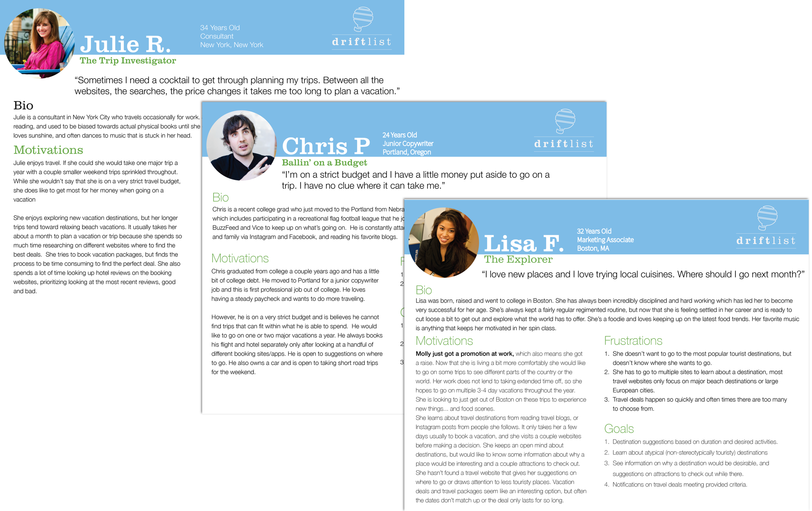
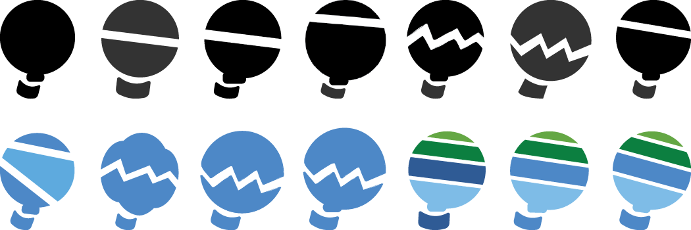
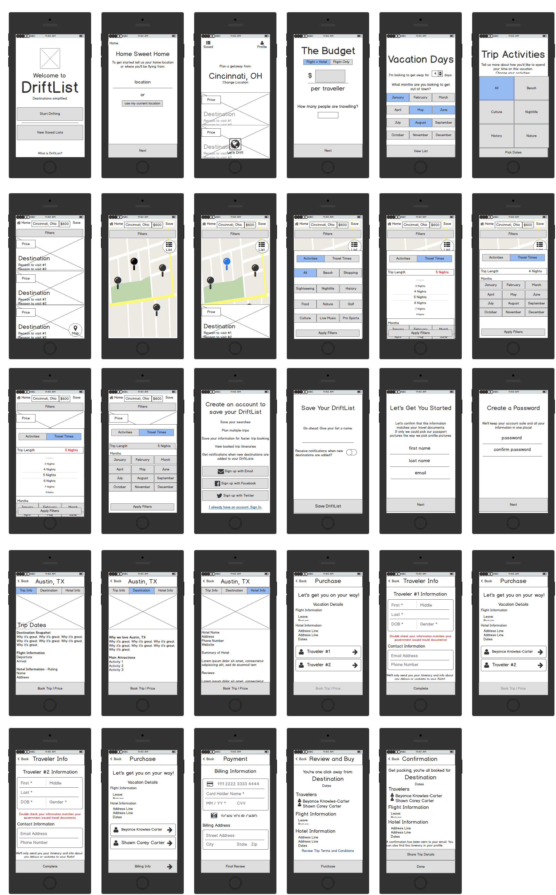

Ask a handful of people what they would do if they had more money, and many of them would say they would get out and travel. DriftList is an iOS app designed to help people easily discover exciting travel destinations within their budgets.
The Problem
For the many living on strict budgets planning a memorable trip can quickly go from an exciting to painful. Current booking solutions claim to offer travelers the best deal and with prices appearing to fluxuate daily a stressful urgency ensues. Additionally, travel sites offer infinite options for flight times, airlines and hotels for only one destination at a time. If customers are looking to book a beach vacation they’ll have to go through the painful process of comparing and adjusting airline/flight/hotel combinations for Miami, Cancun, and San Diego separately. Talk about decision fatigue!
The inspiration for creating DriftList originated with my own frustrations trying to plan vacations. Between the multiple browser tabs and creating spreadsheets of the different travel combinations for the best price, planning a trip makes me want to pull my hair out.
The Solution
Less is more, and turn the process of planning a trip upside down. DriftList changes the way travelers book their trips and discover new destinations. The world is an enormous place and sometimes people need guidance to plan vacations that not only give them unforgettable experiences but also fit their budgets. With DriftList customers can specify their travel budget, the time periods they are looking to travel, and the types of activities they are looking for on their vacation. From there DriftList introduces users to a wonderful list of destinations that will give them what they are looking for in a vacation, some they have heard of and maybe some others they had never considered before!
The Process
Get to Know the User
While I had very strong feelings about the problem at hand and what I thought could solve this problem I needed to better understand the perspective of The People. I needed to get immersed in who they were and what their habits were. To get to that place I created a user survey to learn, among other things, the following:
- what their travel planning process was like;
- what kinds of trips they wanted to go on;
- what were their most important considerations when booking their trips; and,
- most importantly whether or not they’d want a solution that gave them destination suggestions based on price, activities and timing.
This survey was distributed across social media and online forums and completed by nearly 50 respondents. The results were astounding and some of the key insights gained included:
- Only about 50% of travelers go into the trip planning process having a specific destination in mind, and about that many indicate that a specific destination as the most important factor while booking a trip…
- … the other 50%: are fairly open when it comes to destination and prioritize maintaining a strict budget or making sure certain activities are available.
- Surprisingly, only 8% stated that traveling at a specific time/date as the most important factor.
- 90% are consulting multiple websites when booking their trips
- 77% are booking hotels and flights separately (as opposed to vacation packages)
- 80% would prefer to go to a new destination
- 50% of respondents were “definitely” open to suggestions based on budget.*
- 57% of respondents were “definitely” open to suggestions based on travel activities.*
* Both of these significantly increased when removing the results respondents who had prioritized a specific destination as the most important factor when planning a trip.
With this information, I could move confidently forward with the developing the concept of DriftList. It was clear from these survey results, that the frustration was real among those wanting to travel on a budget to find a better solution.
Keep Accountable: Personas
Although I had the survey results to confirm my original suspicions it was important to frame these answers and numbers into something more tangible and real. I conducted follow-up interviews with a small number of respondents to dig deeper into their responses, and better understand their attitudes towards the problem and my proposed solution. These candid conversations allowed me to develop the following personas to keep me accountable to my users as I designed DriftList.
Understand the Competition
A major pain point identified by the survey respondents was the number of travel websites on the market purporting to offer customers the best travel deals. As a result the next crucial step I needed to take was digging deep into the major players of the travel booking market. I needed to have a command of the things they were doing well and identify where they were falling short. View my competitive analysis here.
Develop Focus: User Stories and User Flows
With a better understanding of my potential users and the other competitors in the market I could move forward with creating user stories to help me prioritize product features for inclusion in the DriftList MVP and subsequent updates. These user stories were then converted in user flows to describe and visualize how the user would interact with the product to accomplish those stories.

Create an Identity
Given all the feelings revealed via the user survey and the interviews it was clear that as a brand this product needed to capture a feeling of relaxing, or even of being on a vacation. This product’s users are in search of a calmer experience.
 Because the central premise of the product was to suggest destinations based on user specified parameters it seemed as if the users were open and willing to “drift.” The word drift by its very definition implied a slower pace, and the “list” would signify the suggested destinations.
Because the central premise of the product was to suggest destinations based on user specified parameters it seemed as if the users were open and willing to “drift.” The word drift by its very definition implied a slower pace, and the “list” would signify the suggested destinations.
From there DriftList needed a color palette that would support that feeling of calm. The balloon, not only known for drifting, also communicated a feeling of freedom and serenity.
Design the Conversation
Low Fidelity Wireframes
A common theme that arose from my user research and interviews was that when it came to booking vacations, customers felt overwhelmed with the number of options shown on the screen at any given time.
As a result, the main goals of the design of DriftList needed to be creating a user experience that was conversational and guided users towards vacations that met their interests and budgetary needs by reducing the number of options that can be toggled. The product had to remove the stress of feeling pressured to spend beyond a budget or thinking some secret combination of filters would yield the perfect trip.
With this and my prioritized user stories, I began scribbling sharpie/pen drawings into a trusty sketchbook to quickly work through some of the initial screens. The focus of the low fidelity wireframe development would be figuring out how much information would be on each screen to create and maintain the more relaxed pace.
High Fiedelity Wireframes
Equipped with a foundation of how users would move through DriftList thanks to my low fidelity wireframes, it was time to develop high fidelity wireframes to get ready for prototyping and testing. Using Sketch, I able to create more detailed mockups with the precise typography, white space and content proportions needed to DriftList’s tone and experience.
Test Early and Test Often 1.0- A/B Test for Vacation Activities Screens
On my quest to create the “conversational” experience I had come upon two design directions on how users could specify their vacation activity preferences. I created an a/b preference test on UsabilityHub.com to help me determine the best direction.


The Result: Contrary to my personal prediction, “Option A” was preferred by almost 80% of the 30 respondents. Here I was once again taught that “less is more.” The decision was made, and I moved forward.
Test Early and Test Often 2.0 - Pre-Color Usability Testing
Images
Are
Coming
Soon
Prior to the addition of color to these wireframes, these black and white wireframes were compiled using InVision to create a clickable prototype for a first sweep with usability testing. I completed 3 usability tests with friends across the country utilizing a Skype screen share, and then also tested with two strangers at my local starbucks for the price of two cups of coffee. The three tasks I was testing for were:
- Creating a DriftList (searching for a vacation)
- Learning about a destination
- Purchasing/booking a vacation
While the tone and concept were very well received and viewed as a nice change from current travel apps or booking experiences available -- there were three large consistent critiques:
- When going through the process of creating a DriftList, users felt that although the questions on each screen were quick and easy to answer they felt as if they would like to know how many steps there would be.
- While the pace of finding a travel destination felt very smooth and easy. once the users were getting into reading about the destinations there was just too many words on the screen or too much information.
- The users felt similarly about the payment flow. They felt it was very text heavy and cramped, and the feelings of the old travel websites was starting to creep back.
An Informed Prototype
This handful of usability tests provided enough feedback to make informed updates to my existing wireframes for the ultimate clickable prototype.
Addressing Issue #1


Addressing Issue #2


Addressing Issue #3


Conclusions
DriftList is a passion project as it seeks to solve a legitimate problem that many people of my age and experience face regularly. While I had several strong feelings about the concept and design, the most important lesson learned was regarding checking my own biases. While I may believe that I'm the ideal user and target of a product it is crucial to learn more about those around me facing the same problem. Time and time again during the process of designing DriftList I was loudly corrected by my users. It was humbling, but also allowed me to design with confidence knowing decisions were made with the voices of users at heart.
In considering the further development of the project I would focus on the information to be displayed on each destinations information pages. To do so, I would conduct further usability testing on these screens and extensive interviews. I also think DriftList presents unique opportunities to integrate with APIs such as Yelp or Foursquare for reviews or activity suggestions for each destination.